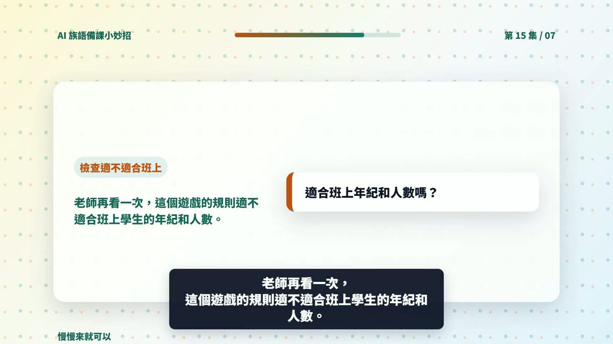

EP015 講義：請 ChatGPT 幫忙想一個課堂小遊戲
<!-- handout-screenshot:auto -->
講義截圖

圖說：EP015 本集操作畫面截圖，協助老師對照影片步驟與講義內容。
<!-- /handout-screenshot:auto -->
今天只做一件事
請 ChatGPT 想一個不用道具、時間短、馬上能玩的課堂小遊戲，再依正式資料核對它適不適合自己的班級。
需要準備
開始前，先把下面五件事想好：
- 想要的氣氛：提神、複習、放鬆，或讓大家開口說族語。
- 可以玩的時間：例如 3 分鐘或 5 分鐘。
- 學生狀況：年齡、人數，以及大約會多少族語。
- 教室限制：能不能起立、走動、分組或大聲回答。
- 本課內容：準備 3～5 個已確認正確的族語詞句或文化重點。
不要放入學生姓名、聯絡方式、成績或其他個人資料。
步驟 1：打開 ChatGPT
- 打開 ChatGPT。
- 找到畫面下方的輸入框。
- 先不要急著送出，確認上面的五項資料都準備好了。
步驟 2：輸入本集專用任務
把中括號裡的內容換成自己的資料，再整段貼進 ChatGPT：
我想為族語課設計一個馬上能玩的課堂小遊戲
課程主題是：[填入主題]
學生是：[填入年齡或年級]，共 [填入人數] 人
學生程度是：[初學／已有基礎]
我想要的氣氛是：[提神／複習／放鬆／鼓勵開口]
可用時間是：[填入分鐘數]
教室限制是：[例如空間小，不能跑動]
要練習的族語詞句或文化重點是：
1. [填入已確認正確的內容]
2. [填入已確認正確的內容]
3. [填入已確認正確的內容]
請設計一個不用準備道具的小遊戲
請依序寫出：
1. 遊戲名稱
2. 遊戲目的
3. 老師開始時要說的話
4. 學生要怎麼做
5. 一步一步的進行方式
6. 每一步大約需要多久
7. 學生答錯或不敢開口時，老師可以怎麼幫忙
8. 適合這個年齡與人數的安全提醒
遊戲規則要簡單，不淘汰學生，不嘲笑答錯的人
只使用我提供的族語詞句與文化內容，不要自行增加不確定的內容步驟 3：送出並慢慢看
- 按下送出按鈕。
- 等 ChatGPT 回答完，不用急著往下操作。
- 從「遊戲名稱」開始，一項一項往下看。
- 用手指或滑鼠照著規則走一次，想像學生實際玩時會發生什麼事。
AI 回覆檢查點
拿到第一版後，逐項確認：
- [ ] 不用另外買道具或準備複雜材料。
- [ ] 所有步驟加起來沒有超過可用時間。
- [ ] 規則用一句一句的短句寫清楚。
- [ ] 適合班上的年齡、人數與活動空間。
- [ ] 學生知道何時開始、要回答什麼、何時結束。
- [ ] 沒有讓答錯的學生被嘲笑、被淘汰或感到難堪。
- [ ] 族語詞句與文化內容都來自老師提供的資料。
- [ ] 老師不用臨時猜規則，就能直接帶領。
步驟 4：不合適就請它改
不需要重新問一遍。接在同一個對話裡，直接說要改哪裡。
教室不能走動時，可以貼上：
請把這個遊戲改成全程坐在座位上也能玩
時間仍然控制在 3 分鐘內
其他條件不要改規則太複雜時，可以貼上：
這個規則對初學者太複雜
請改成最多 3 個步驟
每一步都補上老師可以直接說的簡短指令步驟 5：上課前自己試一次
老師先照著規則完整走一遍，並實際計時。只要有一個地方說不清楚，就把那一句改得更短、更明確。
族語與文化安全提醒
- AI 不一定懂正確的族語拼寫、方言別與使用情境，族語內容一定由老師核對。
- 涉及祭儀、禁忌、身分、部落故事或不適合公開的知識時，不要讓 AI 自行補充。
- 不要把不同族群或不同部落的文化混在一起。
- 遊戲可以活潑，但不能拿族名、口音、傳統姓名或文化禁忌當笑點。
- 若內容來自耆老、族人或教材，使用前要確認是否適合在這個班級與場合分享。
今日金句
說出氣氛、時間和班級狀況，AI 才能想出真正玩得起來的遊戲。
下一步
把確認過的遊戲名稱、規則與老師用語存下來。下一次只要更換主題、時間和族語內容，就能再做一個適合新課程的小遊戲。